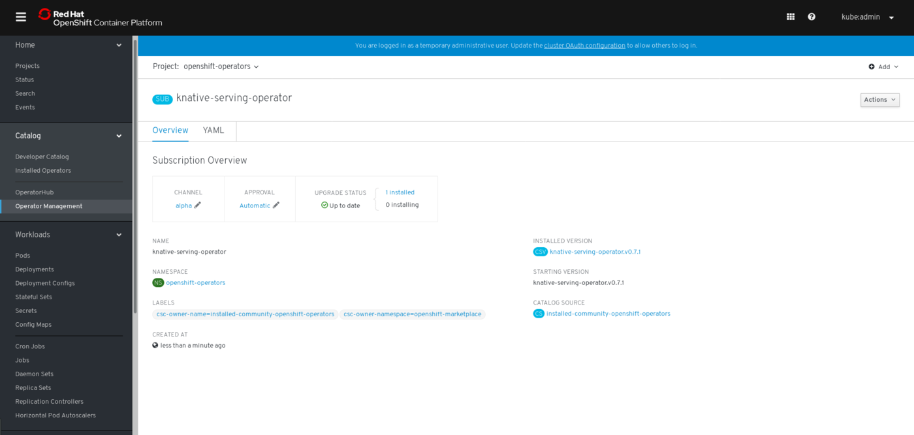

Knative Serving on OpenShift Serverless
version: 0.7.1
Knative Serving can be installed by using the Knative Serving Operator available on the OpenShift OperatorHub.
This release introduces Knative Serving v0.7.1 on an OpenShift 4.1 cluster (OCP). This release should not be used in a production environment.
|
Prerequisites
-
An OpenShift 4 cluster is required for installation. Visit try.openshift.com for information on setting up an OpenShift 4 cluster.
| You will need cluster administrator privileges to install and use Knative on an OpenShift cluster. |
| Long-running clusters are not supported in this release. |
Installing the Knative Serving Operator
-
Go to Catalog > OperatorHub in the OpenShift web console. A list of operators for OpenShift, provided by Red Hat as well as a community of partners and open-source projects is provided. Click on the Knative Serving Operator tile.
Use the Filter by Keyword box to facilitate the search of the Knative Serving operator in the catalog. 
-
A Show Community Operator dialog box will open. Click Continue to proceed.
-
The Knative Serving Operator descriptor screen will appear. Click Install.

-
On the Create the Operator Subscription screen, create a new subscription by clicking on the Subscribe button. This will install the Knative Serving Operator in the project
openshift-operatorsand Knative Serving in theknative-servingproject.
The Operator Lifecycle Manager (OLM) installs the operator, which will automatically install Knative. This installation will create the knative-serving,istio-operator, andistio-systemnamespaces. -
Verify the subscription status for the installation operator, by viewing the Subscription Overview. The UPGRADE STATUS will update from
0 Installingto1 Installed.The screen will update after a few minutes. Wait for the knative-servingnamespace to appear in the project drop-down menu. Refresh the page if needed. -
Knative Serving is now installed. Navigate to Catalog > Installed Operators to confirm the operator is installed. Click on knative-serving to view the install status.

Uninstalling the Knative Serving Operator
-
Go to Catalog > OperatorHub in the OpenShift Web Console.
-
Click on the Knative Serving Operator tile.

-
The Show Community Operator` dialog box will appear. Click Continue to proceed.
-
Once the Knative Serving Operator descriptor screen appears, click Uninstall.

-
Select Also completely remove the Operator from the selected namespace, in the Remove Operator Subscription dialog box.
-
Click Remove.